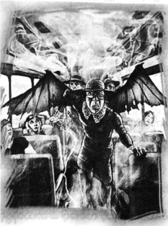

သင်္ချာဆရာမနှင့် ပြန်တွေ့ဆုံခြင်း
စင်ထရယ်ပန်းခြံ ရေကန် မြောက်ဘက်နားသို့ ပါစီတို့ ရောက်လာခဲ့ကြသည်။ မစ္စအိုလာရီမှာ အလွန် ပင်ပန်းနေပုံ ရပြီး တရှုံ့ရှုံ့ဖြင့် အနံ့ခံလျက်ရှိ၏။
“အိမ်ရဲ့အနံ့ ရသွားတာပါ …” ဟု နီကိုက ဆိုသည်။
“ကျောက်သားတွေကို ဖြတ်ပြီး အနံ့ရနေတာလား”
“ငရဲပြည်ဝင်ပေါက် အဓိကနှစ်ပေါက်ပဲ ရှိတယ် … ပါစီ … တစ်ခုက လော့ အိန်ဂျယ်လိစ်မှာ …”
“ချာရွန်ရဲ့ ကူးတို့လှေလား …”
နီကို ခေါင်းညိတ်ရင်း ..
“ဝိညာဉ်တွေ အများစုက အဲဒီလမ်းကပဲ သွားကြတယ် … ပိုပြီးကျဉ်းတဲ့လမ်း တစ်ခု ရှိသေးတယ် … ရှာရတာ လည်း ပိုခက်တယ် … အော်ဖီးယပ်စ် သုံးခဲ့တဲ့လမ်း”
“စောင်းနဲ့ တစ်ယောက်လား …”
“အင်း … သူပဲ … သူ့ဂီတအစွမ်းနဲ့ ငရဲပြည်သွားဖို့ လမ်းဖောက်ခဲ့တာ . ဟေးဒီးစ်ရဲ့ နန်းတော်ထိ သီဆို တီးမှုတ်ပြီး သွားတယ် … သူ့ဇနီးရဲ့ ဝိညာဉ်ကို ပြန်ခေါ်တာ အောင်မြင်လုနီးပါး ဖြစ်ခဲ့တယ် …”
ထိုဇာတ်လမ်းကို ပါစီ သတိရလာ၏။ သူ့ဇနီးကို လူသားတို့ကမ္ဘာဆီ ပြန်ခေါ်ဆောင်လာစဉ် နောက်လှည့် မကြည့် ရဟု တားမြစ်ထားသော်လည်း သူလှည့်ကြည့်ခဲ့သည်။ ပြောရလျှင် နတ်သွေးနှောသူများ ကြားဖူးနေကျ နောက်ဆုံးတွင် သေသွားသော ပုံပြင်များထဲက တစ်ခုပင်။
“ဒါက အော်ဖီးယပ်စ် သုံးခဲ့တဲ့ လမ်းပေါ့ … ဘယ်လိုဖွင့်ရမှာလဲ”
ကျောက်တုံးပုံ တစ်ခုသာဖြစ်ပြီး မည်သို့မှ ငရဲပြည် ဝင်လမ်းနှင့် မတူ။
“ဂီတသံ ပေးရမယ် … မင်း သီချင်းဆိုတဲ့အသံ ဘယ်လိုနေသလဲ …” ဟု နီကိုက မေးလိုက်သည်။
“ဟင့်အင်း … မဆိုတတ်ဘူး … မင်းက ဟေးဒီးစ်ရဲ့သားပဲ … တံခါးဖွင့်ခိုင်းလို့ မရဘူးလား …”
“မလွယ်ဘူး … ဂီတသံ လိုတယ် …”
သူသာ သီချင်းဆိုလျှင် တံခါးမပွင့်ဘဲ ငလျင်လှုပ်လာနိုင်ကြောင်း ပါစီ တွေးမိသည်။
“ငါ သိပြီ … ဂရိုဗာ …”
အတန်ကြာ စောင့်နေမိကြပြီး မစ္စအိုလာရီပင် အိပ်ပျော်သွားခဲ့သည်။ တောအုပ်ဆီမှ ပရစ်သံများနှင့် ဇီးကွက် အော်သံများကို ကြားနေရသည်။ မနီးမဝေးမှ မြင်းခွာသံများကို ကြားရပြီး မြင်းစီးရဲများ ကင်းလှည့်နေကြခြင်းပင်။ မနက် စောစော တစ်နာရီကြီး ပန်းခြံထဲတွင် ကောင်လေးနှစ်ယောက်ကို တွေ့ရပါက ရဲများ အလွန် သဘောတကျ ရှိပေလိမ့်မည်။
“အလုပ်မဖြစ်ဘူးကွ …”
နီကို ပြောသော်လည်း ထိုအချက်ကို ပါစီ လက်မခံ။ စိတ်ချင်းဆက်သွယ်မှုမှာ လပေါင်းများစွာ ကာလအတွင်း ပထမဆုံးအကြိမ်အဖြစ် ခံစားချက် ရှိလာခဲ့ပြီး ဂရိုဗာ အနီးအနားတွင် ရှိနေကြောင်း ခံစားလာရသည်။ မျက်လုံးမှိတ်ကာ ပါစီ အာရုံ စိုက်လိုက်၏။
“ဂရိုဗာ …”
ပန်းခြံ တစ်နေရာရာတွင် ဂရိုဗာ ရှိနေကြောင်း ပါစီ သိနေသည်။ သို့သော် မည်သည့်ခံစားချက်ကိုမှ မသိရ။
“ဂရိုဗာ”
ပို၍ အာရုံစိုက်လိုက်လျှင် တစ်စုံတစ်ခုသော အသံအား ကြားရသလို ရှိသည်။ ပါစီ့အာရုံထဲတွင် ပုံရိပ်များ မြင်လာရ၏။ တောအုပ်ထဲရှိ ဧရာမအဲမ်ပင်ကြီးကို မြင်လာကာ အမြစ်များမှာ အိပ်ရာသဖွယ် ဖြစ်နေကြသည်။ ထို အမြစ်များ ပေါ်တွင် လက်ပိုက်လျက် မျက်စိမှိတ်ကာ လဲလျောင်းနေသော ဆေတာတစ်ကောင်အား တွေ့ရ၏။ ပထမပိုင်း တွင် ဂရိုဗာဟု သေချာမပြောနိုင်။ တစ်ကိုယ်လုံးကို သစ်ကိုင်းများ၊ သစ်ရွက်များဖြင့် ဖုံးအုပ်နေပြီး ဤနေရာတွင် အိပ်ပျော် နေသည်မှာ အလွန်ကြာပြီ ဖြစ်ဟန်ရှိ၏။ အမြစ်များက သူ့ကိုပတ်ထားကြကာ မြေကြီးထဲ တဖြည်းဖြည်း ဆွဲချ နေဟန် ရှိ၏။
“ဂရိုဗာ … ထတော့ …”
“အင်း ..”
“ဟေ့ကောင် … မင်း မြေကြီးထဲ ရောက်နေပြီ … ထတော့”
“အိပ်ချင်တယ် …”
“မုန့် မစားချင်ဘူးလား … ကိတ်မုန့်လေ …”
ဂရိုဗာ ချက်ချင်း မျက်စိ ပွင့်လာ၏။ ရုတ်တရက် အတွေးများမှာ ခေါင်းထဲ တိုးဝင်လာသဖြင့် ပါစီ မြင်နေရသမျှ ပုံရိပ်များ ပျောက်သွားပြီး လဲကျမလို ယိုင်ထိုး သွားသည်။
“ဘာဖြစ်တာလဲ …”
နီကိုက မေး၏။
“အဆက်အသွယ်ရပြီ … သူ … သူ လာနေပြီ”
တစ်မိနစ်ခန့်အကြာတွင် အနီးရှိ သစ်ပင်လှုပ်ခါသွားပြီး သစ်ကိုင်းပေါ်မှ ဂရိုဗာ ဇောက်ထိုး ပြုတ်ကျလာခဲ့သည်။
“ဂရိုဗာ”
ဂရိုဗာမှာ ဆိတ်တစ်ကောင်ပမာ တပဲပဲ မြည်နေ၏။
“မင်း ဘာဖြစ်သွားသေးလဲ …”
“ဘာမှ မဖြစ်ပါဘူး … ပန်းခြံတစ်ဖက်ကနေ ငါ ထွက်လာတာ … သစ်ပင်စောင့် နတ်သမီးတွေက တောအုပ်ထဲက ဖြတ်ပို့ပေးတာ … သူတို့က အမြင့်အနိမ့် သိပ်မသိကြဘူး …”
ဂရိုဗာ၏ ဆိတ်ဦးချိုမှာ ဆံပင်ကြားထဲမှ တစ်လက်မခန့်ထိ ရှည်ထွက်နေပြီ ဖြစ်သည်။ ပြုံးရင်းနှင့် ဂရိုဗာ ထရပ် လိုက်သည်။ ပြီးခဲ့သော နွေရာသီမှစကာ ဂရိုဗာ မှာ လူပုံစံ ဟန်မဆောင်တော့ဘဲ ခြေတုဖိနပ်နှင့် ဦးထုပ်ကိုမသုံးတော့။ ဂျင်းဘောင်းဘီပင် မဝတ်တော့ဘဲ အောက်ပိုင်း ဆိတ်ခြေထောက်နှင့်သာ နေတော့သည်။ ယခုအခါ ဂရိုဗာ့အရပ်မှာ ပါစီနှင့် အတူတူပင်ဖြစ်၏။
“နီကို့ကို မင်း မှတ်မိတယ် မဟုတ်လား …”
နီကို့ကို ခေါင်းညိတ်နှုတ်ဆက်ရင် ပါစီကို ဂရိုဗာ ပွေ့ဖက်လိုက်သည်။
“ပါစီ … မင်းကို သတိရနေတာ … သင်တန်းကိုလည်း လွမ်းတယ် … တောထဲ မှာ စားစရာ ကောင်းကောင်း မရှိဘူး …”
“ငါ စိတ်ပူနေတာ .. မင်း နှစ်လလုံးလုံး ဘယ်ပျောက်နေတာလဲ …”
“နှစ်လ … ဟုတ်လား”
ဂရိုဗာ မပြုံးနိုင်တော့။
“မင်း … မင်း ဘာတွေ ပြောနေတာလဲ”
“မင်းသတင်း ငါတို့ ဘာမှမကြားရတာ နှစ်လရှိပြီ … ဂျူနီပါလည်း စိတ်ပူနေတယ် … အိုင်းရစ်သတင်း ပို့လို့လည်း မရဘူး”
“နေပါဦး … အခု ဘာလလဲ”
“ဩဂုတ်”
ဂရိုဗာ့မျက်နှာ ဖြူရော်သွားခဲ့သည်။
“မဖြစ်နိုင်ဘူး … ငါ ခဏလေး လှဲအိပ်လိုက်တာ … ဇွန်လပဲ ရှိသေးတယ်”
ရုတ်တရက် ဆိုသလို ပါစီလက်အား ဆွဲရင်း ဂရိုဗာ ပြောလိုက်သည်။
“ငါ သတိရလာပြီ … ငါ့ကို အိပ်ပျော်သွားအောင် လုပ်ခဲ့တာပဲ … သူ့ကို တားမှ ဖြစ်မယ်”
“နေပါဦး … ဘာတွေဖြစ်ခဲ့သလဲ ပြောပြပါဦး”
“ငါ လမ်းလျှောက်လာနေတုန်း မြေကြီးတွေ တုန်ခါလာတယ် … တောအုပ်ထဲမှာ စွမ်းအားကြီးတဲ့ တစ်ခုခုနဲ့ နီးလာ သလိုပဲ …”
နီကိုက …
“မင်းက အဲလိုဟာတွေကို အာရုံခံနိုင်တယ်လား”
“ဟုတ်တယ် … ပန် သေပြီးကတည်းက သဘာဝထဲမှာ တစ်ခုခု လွဲနေတယ်လို့ ငါ ခံစားရတယ် … တောထဲ ရောက်ရင် အမြင်ရော အကြာအာရုံပါ ပိုစူးရှလာသလိုပဲ … အဲဒီ့အနံ့နောက် ငါ လိုက်တော့ ပန်းခြံထဲမှာ လျှောက်နေတဲ့ ကုတ်အင်္ကျီ အနက်နဲ့ လူကို တွေ့ရတယ် … ထူးခြားတာက အရိပ် လုံးဝမထင်တာပဲ … နေ့လယ်ခင်း နေရောင်အောက်မှာ အရိပ် လုံးဝမထင်ဘူးကွာ … သွားတဲ့အချိန်မှာ သူ့ပုံရိပ်က တဖျတ်ဖျတ် ခါနေတတ်တယ်”
“တံလျှပ်လိုမျိုးလား …”
“အင်း … သူ ဖြတ်လျှောက်သွားတာနဲ့ …”
”လူတွေ အိပ်ပျော်ကုန်ကြရော မဟုတ်လား”
နီကိုက ဖြတ်၍ မေးလိုက်သည်။
“ဟုတ်တယ် … သူ မရှိတော့တာနဲ့ ပြန်နိုးလာကြပြီး ဘာမှမဖြစ်သလို အလုပ် ဆက်လုပ်နေကြရော …”
“မင်း အဲဒီ့လူကို သိလို့လား ….”
နီကို့ကို ပါစီ လှမ်းမေးလိုက်သည်။
“ဆိုပါတော့ … ဘာဆက်ဖြစ်သေးလဲ ဂရိုဗာ”
“သူ့နောက်က ငါ လိုက်ခဲ့တယ် … အဆောက်အအုံတွေကို မော့ကြည့်နေပြီး တစ်ခုခုကို တွက်ချက်နေသလိုပဲ … အဲဒီအချိန်မှာ သူ့ကို မိစ္ဆာမဟုတ်ရင် မိစ္ဆာထက် ဆိုးမယ် ဆိုတာ ငါ သိလိုက်တယ်… အဲပ်ပင်ကြီးနား ရောက်တော့ သစ်ပင်စောင့် နတ်သမီးတွေကို စစ်ကူခေါ်မယ်လို့ ငါ စဉ်းစားတုန်း သူက နောက်ကို လှည့်လာတယ်”
“ပါစီ … သူ့မျက်နှာကို ငါ ပုံဖမ်းလို့ မရဘူး … အမြဲတမ်း ပြောင်းလဲနေတယ် … သူ့ကို ကြည့်မိရုံနဲ့ အိပ်ချင် လာတယ် … ခင်ဗျား ဘာလုပ်နေတာလဲလို့ မေးတော့ “တိုက်ပွဲမစခင် လေ့လာရေးဆင်းနေတာ” လို့ ပြန်ဖြေတယ် …. ဒီနေရာက ငါ့ တောအုပ် … ဒီမှာ ဘာတိုက်ပွဲမှ မစရဘူးဆိုတော့ အဲဒီသူက ရယ်ပြီး ပြောတယ် … “ငါ့စွမ်းအားကို အဓိက ပွဲအတွက် ချန်ထားလို့ မင်း ကံကောင်းသွားတယ် … ခဏတော့ အိပ်လိုက်ဦး” တဲ့ … အဲဒါပဲ ငါ နောက်ဆုံး မှတ်မိ တော့တယ်”
“ဂရိုဗာ … မင်း တွေ့ခဲ့တာ မော်ဖီးယပ်စ်ပဲ … အိပ်မက်နတ်ဘုရား … ပြန်နိုးလာတာ မင်း အတော် ကံကောင်း နေပြီ”
“နှစ်လတောင် ငါအိပ်ပျော်သွားတာ ကံကောင်းတာလား … နှစ်လကွ … နှစ်လ”
ဂရိုဗာနှင့် ဆက်သွယ်မရသည့် ကိစ္စကို ယခုမှ နားလည်နိုင်ပြီ ဖြစ်သည်။
“နတ်သမီးလေးတွေက မင်းကို ဘာလို့မနှိုးကြတာလဲ”
“သူတို့က အချိန်ကို လူတွေလို မတွက်ကြဘူး … သစ်ပင်အတွက် နှစ်လ ဆိုတာ ဘာမှမကြာဘူးလေ… တစ်ခုခု ဖြစ်နေတယ်လို့ကို ထင်မှာ မဟုတ်သေးဘူး”
“ပန်းခြံထဲကို မော်ဖီးယပ်စ် ဘာလာလုပ်တာလဲ သိရမှဖြစ်မယ် … အဓိက ပွဲဆိုတဲ့ စကားကို ငါတော့ မကြိုက် လှဘူး”
နီကိုက …
“သူက ခရိုနော့စ်ဘက် ပါသွားပြီ … အဲဒါက သေချာတယ် … နတ်ကလေးတွေ အတော်များများ ဟိုဘက် ပါကုန် ကြပြီ … ဒီမြို့ကို ဝင်စီးမှာ သေချာသလောက်ပဲ … ငါတို့ အစီအစဉ်အတိုင်း ဆက်လုပ်မှဖြစ်မယ် ပါစီ”
“နေပါဦး … ဘာအစီအစဉ်လဲ”
ပါစီတို့ ရှင်းပြပြီးသောအခါ ဂရိုဗာမှာ အလွန်စိတ်ပူဟန် ရှိ၏။
“မင်း တကယ်ပြောနေတာပဲ … ငရဲပြည် ထပ်မသွားချင်စမ်းပါနဲ့”
“မင်း လိုက်ခဲ့ဖို့ မလိုပါဘူး… မင်းက ခုမှနိုးလာတာ … တံခါးဖွင့်ဖို့ သီချင်းတစ်ခုခု တီးမှုတ်ပေးရင်ရပြီ .. ဖြစ်တယ် မဟုတ်လား”
သူ့ပလွေကို ထုတ်ယူရင်း ဂရိုဗာ ပြော၏။
“စမ်းကြည့်ရမှာပဲ … ကျောက်တုံးကို ခွဲနိုင်တဲ့ သီချင်းတချို့ ငါ သိပါတယ် .. မင်း သေချာရဲ့လား ပါစီ …”
“အင်း … ငါ့ကို ကူညီစမ်းပါ … ဒီကိစ္စက အရေးကြီးတယ် …”
ဂရိုဗာ၏ ပလွေသံကို ကြားရလျှင် ကျောက်တုံးများ လှုပ်ခါလာကာ နောက်ဆုံးတွင် ကွဲအက်သွားခဲ့သည်။ အတွင်းသို့ ချောင်းကြည့်လိုက်လျှင် အောက်သို့ ဆင်းသော လှေကားထစ်များကို တွေ့ရ၏။ မနှစ်က ဝင်္ကပါထဲ ဝင်ခဲ့စဉ် ကထက် ယခု လှေကားများမှာ ပို၍ အန္တရာယ်ကြီးသည်ဟု ခံစားရ၏။ ဟေးဒီးစ်ဆီ သွားသောခရီးမှာ အများအားဖြင့် အပြန်လမ်း မရှိတတ်။
“ကျေးဇူးပဲ ဂရိုဗာ”
“ပါစီ … ခရိုနော့စ် တကယ်ပဲ ဒီမြို့ထဲ ဝင်လာမယ် ထင်လို့လား …”
“မထင်ဘူးလို့ ငါ ပြောချင်ပါတယ် … ဒါပေမဲ့ ဒီမြို့ကို သူ ဝင်စီးလိမ့်မယ် …”
“ဒါဆို သဘာဝနတ်လေးတွေကို စုစည်းထားမှ ဖြစ်မယ် … ငါတို့ ကူညီနိုင်မှာပါ … မော်ဖီးယပ်စ်ကိုလည်း ငါ ရှာကြည့်မယ်”
“ဂျူနီပါဆီ ဆက်သွယ်လိုက်ဦး”
ဂရိုဗာ မျက်လုံးပြူးသွား၏။
“ဘုရားရေ … ဂျူနီပါ ငါ့ကို သတ်တော့မှာပဲ”
ပြေးသွားရန်ပြင်ပြီးမှ ပြန်လှည့်လာကာ ပါစီ့ကို နောက်တစ်ခါ ဖက်ထားလိုက်သည်။
“သတိထားသွား … အသက်နဲ့ ကိုယ်နဲ့ မြဲမြဲပြန်လာခဲ့ …”
ဂရိုဗာ ပျောက်ကွယ်သွားချိန်တွင် နီကိုနှင့် ပါစီတို့ မစ္စအိုလာရီအား နှိုးလိုက် ကြသည်။ လိုဏ်ခေါင်းအနံ့ကိုရလျှင် မစ္စအိုလာရီ စိတ်ဓာတ် တက်ကြွလာခဲ့ပြီး ရှေ့ မှ ဦးဆောင်ကာ ဆင်းသွား၏။
“အဆင်သင့်ပဲလား … ဘာမှ မဖြစ်ပါဘူး … စိတ်မပူပါနဲ့”
နီကို့လေသံမှာ ပါစီ့ကို နှစ်သိမ့်သည်နှင့် မတူဘဲ သူ့ကိုယ်သူ အားတင်းနေသည့် ပုံနှင့်သာ တူနေ၏။ ကြယ်များကို မော့ကြည့်ရင်း နောက်တစ်ကြိမ် မြင်ရပါတော့ မလားဟု တွေးကာ လိုဏ်ခေါင်းထဲသို့ ဆင်းခဲ့သည်။
လှေကားမှာ အောက်သို့ ဆက်တိုက် ဆင်းသွားနေပြီး ကျဉ်းမြောင်းကာ မတ်စောက်သလို ချော်ချွတ်နေသည်။ ပါစီ့ဓားမှ အလင်းရောင်သာ ရှိနေပြီး လုံးဝ မှောင်မည်းနေ၏။ ဖြည်းဖြည်းသွားရန် စဉ်းစားသော်လည်း မစ္စအိုလာရီမှာ ပျော်ရွှင်စွာ ဟောင်သံပြုရင်း ရှေ့မှဦးဆောင်၍ ခပ်သွက်သွက် သွားနေသည်။ ဟောင်သံမှာ အမြောက်ပစ်သံသဖွယ် ပဲ့တင် ထပ်နေရာ ပါစီတို့ လာနေကြောင်း ငရဲပြည်တစ်ခုလုံး သိပြီး ဖြစ်ပေလိမ့်မည်။ နီကို နောက်ချန် ကျန်ရစ်ခဲ့ခြင်းက ထူးခြား နေ၏။
“မင်း နေကောင်းရဲ့လား …”
“ဘာမှ မဖြစ်ပါဘူး … ဆက်သွားစမ်းပါ”
သူ့မျက်နှာ အမူအရာမှာ သံသယ ဝင်နေသလားဟု ထင်ရသည်။ သို့သော် ပါစီ့တွင် ရွေးစရာ များများမရှိ။ မစ္စ အိုလာရီနောက်မှ လိုက်ဆင်းခဲ့ပြီး တစ်နာရီခန့် ကြာလျှင် မြစ်ရေစီးသံအား ကြားလိုက်ရသည်။
တောင်ကုန်းတစ်ခုအောက်မှ ထွက်လာကြပြီး အနက်ရောင် သဲများရှိသည့် ကွင်းပြင်ကြီးဖြစ်ကာ ညာဘက်တွင် စတစ်မြစ်မှာ ခပ်ကြမ်းကြမ်း စီးဆင်းနေ၏။ ကျောချမ်းလာမိသည်။ ဤနေရာသို့ ပါစီ အသက် ဆယ့်နှစ်နှစ်က ရောက်ခဲ့ပြီး အန်နာဘတ်နှင့် ဂရိုဗာ ပါနေသဖြင့်သာ ခရီးဆက်ရန် သတ္တိရှိနိုင်ခဲ့ခြင်း ဖြစ်သည်။ ယခု ပါလာသော နီကိုမှာ ပါစီ့ကို သတ္တိရှိလာစေရန် အားမပေးနိုင်။ သူ့ကို ကြည့်ရသည်မှာ ဖြူဖျော့ပြီး စိုးရိမ်နေပုံရ၏။
ပျော်နေသူမှာ မစ္စအိုလာရီဖြစ်ပြီး သဲမြေပေါ်မှ လူပေါင်ရိုး တစ်ချောင်းကို ကိုက်ချီယူလာကာ ပါစီ့ ခြေရင်းနားသို့ ချပေးလိုက်သည်။ အရိုးကိုပစ်၍ ကစားခိုင်း နေခြင်းပင်။
“ခဏနေဦး …”
နက်မှောင်နေသောရေကို ပါစီ ငေးကြည့်ရင်း စိတ်အားတင်းလိုက်သည်။
“ဘယ်လို လုပ်ရမှာလဲ”
“ဂိတ်ထဲ အရင်ဝင်ရအောင် ..”
“မြစ်က ဒီနားလေးတင်လေ …”
“တစ်ခုကျန်သေးတယ် … အဲဒါ အရင်လုပ်မှ ဖြစ်မယ်”
နီကို ရှေ့မှ ထွက်သွားသည်။ ဂိတ်ထဲထိ ဝင်မည်ဟု တစ်ခါမှ မပြောဘူးသဖြင့် ပါစီ မျက်မှောင်ကြုတ်ကာ စဉ်းစား နေမိသည်။ သို့သော် ငရဲပြည်တွင် ဘာလုပ်ရမှန်း ပါစီ သေချာမသိ။ မလိုက်ချင် လိုက်ချင်နှင့် ဧရာမ အနက်ရောင် ဂိတ်တံခါး ကြီးဆီ ဦးတည်ခဲ့သည်။ ဝိညာဉ်များ ပြည့်နေပြီး အသေအပျောက် များသောနေ့ ဖြစ်ပုံရသည်။
ပါစီ မတားနိုင်ခင် မစ္စအိုလာရီမှာ လုံခြုံရေးဂိတ်ဆီ ပြေးသွားပြီး ဟေးဒီးစ်၏ ခေါင်းသုံးလုံးခွေးကြီး ဆာဘားရပ်စ် ကိုပါ မြင်လာရ၏။ ဆာဘားရပ်စ်မှာ အလွန်ကြီးလွန်းပြီး မစ္စအိုလာရီမှာ ခွေးရုပ်လေးသဖွယ် ထင်ရသည်။ ဆာဘားရပ်စ် မှာ ပါစီတို့ကို ဂရုမစိုက်ဘဲ မစ္စအိုလာရီနှင့် ဝမ်းသာအားရ နှုတ်ဆက်နေကြသည်။
“မစ္စအိုလာရီ … လျှောက်မနမ်းနဲ့လေ … ဟား … ပြဿနာပဲ”
နီကို ပြုံးနေ၏။ ထို့နောက် သူ့အမူအရာမှာ လေးနက်သွားပြီး တစ်စုံတစ်ခုအား သတိရလာပုံ ပေါ်သည်။
“ဝင်ရအောင် … ငါပါနေတော့ မင်းကို တားကြမှာ မဟုတ်ဘူး”
လုံခြုံရေးများကို ဖြတ်ကာ အက်စ်ပိုဒဲလ်ကွင်းပြင်ထဲသို့ ဝင်လာခဲ့ကြသည်။ လေ သုံးကြိမ်ချွန်၍ ခေါ်မှပင် မစ္စ အိုလာရီ နောက်မှ လိုက်လာခဲ့သည်။ အနက်ရောင် မြက်များနှင့် အနက်ရောင် ပေါ်ပလာပင်များ ကြားမှ ဖြတ်ကာ ကုန်းမြင့်ဆီ တက်ခဲ့ကြသည်။ ဟောကိန်းထဲက အတိုင်းသာ ရက်အနည်းငယ်အတွင်း ပါစီ သေခဲ့မည်ဆိုလျှင် ဤကွင်းပြင် ထဲ၌ ထာဝရ နေရနိုင်သည်။ သို့သော် ထိုကိစ္စကို တတ်နိုင်သရွေ့ မတွေးချင်။ ရှေ့မှ သွားနေသော နီကိုမှာ ဟေးဒီးစ်၏ နန်းတော်နှင့် နီးသည်ထက် နီးလာခဲ့၏။
“ဟေး … ဂိတ်ထဲလည်း ဝင်ခဲ့ပြီးပြီ … ဘယ်ထိ ဆက်သွားမလို့လဲ”
မစ္စအိုလာရီဆီမှ မာန်ဖီသံကို ကြားရသည်။ အရိပ်မည်းကြီး မိုးကျလာပြီး အေးစက် မှောင်မည်းသွားရုံ မက သေမင်း၏ အနံ့ကိုပါ ရသလိုရှိ၏။ အရိပ်မည်းကြီး ထိုးဆင်းလာပြီး ပေါ်ပလာပင် ထိပ်တွင် နားလိုက်သည်။ ရှုံ့တွနေသော မျက်နှာ၊ ဆိုးဆိုးဝါးဝါးလက်ရာနှင့် ဦးထုပ်အပြာ၊ ကြေမွနေသော ကြက်သွေးရောင် ဝတ်ရုံနှင့် အဘွားအိုကို ကံဆိုးလှစွာပင် ပါစီ မြင်ဖူးနေ၏။ ကျောပေါ်မှ လင်းနို့တောင်ပံသဖွယ် တောင်ပံကို မြင်ရပြီး လက်နှင့်ခြေထောက်တွင် ချွန်ထက်သော လက်သည်း ခြေသည်းများကို မြင်နိုင်သည်။ လက်တစ်ဖက်တွင် မီးကြာပွတ် ကိုင်ထားပြီး လက်တစ်ဖက်တွင် လက်ကိုင် အိတ် ကိုင်ထားသည်။
“မစ္စဒေါစ့် …”
မစ္စဒေါ့စ်က သွားစွယ်များ ဖြဲပြရင်း ..
“ကြိုဆိုပါတယ် ကောင်လေး …”
ကျန်ဖူရီ နှစ်ကောင်မှာလည်း ပေါ်ပလာပင်၏ အကိုင်းများဆီ ဆင်းသက်လာခဲ့သည်။
“မင်းက အလက်တိုနဲ့ သိသလား …”
နီကိုက မေး၏။
“အလယ်က စုန်းမကြီးလား … ငါ့ သင်္ချာဆရာမလေ”
မအံ့ဩဟန်ဖြင့် နီကို ခေါင်းညိတ်ပြလိုက်သည်။ ဖူရီများကို မော့ကြည့်ရင်း အသက်ပြင်းပြင်း ရှူလိုက်၏။
“အဖေ ပြောတဲ့အတိုင်း ခေါ်လာခဲ့ပြီ … နန်းတော်ကို သွားချင်တယ်”
“ဘယ်လို … နီကို … မင်း ဘာတွေ လုပ်နေတာလဲ”
“ငါ့အဖေက ငါ့ကို ကတိပေးထားတယ် … မြစ်ဆီမသွားခင် မင်းကို သူ့ဆီ ခေါ် လာနိုင်ရင် ငါ့မိသားစုအကြောင်း ပြောပြမယ်တဲ့ … စိတ်မကောင်းပါဘူး”
“ငါ့ကို လိမ်ခေါ်လာတာလား …”
အလွန်ဒေါသထွက်လာသဖြင့် ပါစီ ဘာကိုစဉ်းစားရမည် မသိတော့။ နီကို့ ကို ခုန်အုပ်လိုက်သော်လည်း ဖူရီများ က ပိုမြန်နေပြီး ချက်ချင်း ခုန်ချလာကြတာ ပါစီ့လက်ကို ဖမ်းဆွဲလိုက်ကြသည်။ လက်ထဲမှဓား လွတ်ကျသွားပြီး ချက်ချင်း ပင် ပေခြောက်ဆယ်ခန့်အမြင့် လေထဲတွင် တွဲလဲကြီး ဖြစ်နေတော့သည်။
“မရုန်းနဲ့နော် … လွှတ်မချချင်ဘူး”
ဒေါသတကြီးဟောင်ရင်း မစ္စအိုလာရီ ခုန်သော်လည်း ပါစီ ရှိနေသည့် အမြင့်ထိ မရောက်နိုင်။ တတိယ ဖူရီက ပါစီ့ အား အနီးသို့ ဆွဲ “မ” ခေါ်လာ၏။
“မစ္စအိုလာရီကို ငြိမ်ငြိမ် နေခိုင်းလိုက် … သူ့ကို ဘာမှ ဒုက္ခမရောက်စေချင်ဘူး … မင်းကိုလည်း အဖေက စကား ပြောချင်ရုံပါ”
နီကို့ကို ခွေးနှင့် ရှူးတိုက်ချင်သော်လည်း ဘာမှပို၍ ထူးခြားလာမည်မဟုတ်။ ဖူရီများနှင့် တိုက်ပွဲဖြစ်ပါက မစ္စ အိုလာရီ ဒဏ်ရာရသွားနိုင်၏။
“ငြိမ်ငြိမ်နေ … မစ္စအိုလာရီ … ဘာမှမဖြစ်ဘူး”
အံတင်းတင်းကြိတ်ရင်း ပါစီ အမိန့်ပေးလိုက်သည်။ မစ္စအိုလာရီမှာ တအီအီ ညည်းရင်း ချာလပတ်လှည့်ကာ အပေါ်မော့ကြည့်နေ၏။
“သစ္စာဖောက် … နန်းတော်ဆီ သွားမယ်ဆိုလည်း မြန်မြန်သွားလေ”
အလက်တိုက နန်းတော်ဥယျာဉ်အလယ်တွင် ပါစီ့ကို ပစ်ချထားခဲ့၏။ ငရဲပြည်ရှိ နန်းတော်မှာ ချောက်ချားဖွယ်ရာ လှပလျက်ရှိသည်။ ကျောက်သားပေါ်တွင် အဖြူရောင်သစ်ပင်များ ပေါက်နေပြီး ပန်းခင်းမှာ ရွှေရောင်အပင်များ၊ ကျောက်မျက်ရတနာများဖြင့် အတိပြီးနေ၏။ အက်စ်ပိုဒဲလ်ကွင်းပြင်ကို စီးမြင်နိုင်သော နေရာတွင် ထိုင်နေသည့် ရွှေနှင့်ငွေ အရိုးစုနှစ်ခုအား မြင်နိုင်သည်။ ဆဲလ်ဖာအနံ့ နံနေပြီး အဝေးဆီမှ နာကျင်စွာ အော်ဟစ်သံများ ကြားနေရခြင်းမှအပ ပိတ်ရက်တွင် အပန်းဖြေသင့်သော နေရာတစ်ခုပင်။
ဝင်ပေါက်ကို အရိုးစုစစ်သည်များက စောင့်နေပြီး စုတ်ပြတ်နေသော အမေရိကန်စစ်ဝတ်စုံကို ဝတ်ထားကာ အမ် ၁၆ သေနတ်ကို ကိုင်ထား၏။ တတိယဖူရီက နီကို့ကို ပါစီ့ဘေးသို့ ချပေးလိုက်သည်။ ထို့နောက် ဖူရီ သုံးကောင်လုံး အရိုးစုပလ္လင် ထိပ်တွင် သွားနားကြ၏။ နီကို့ကို လည်ပင်းညှစ်ချင်သော်လည်း ယခုအချိန်မှာ အချိန်ကောင်း မဟုတ်သေး။
မည်သူမှမရှိသော ပလ္လင်များပေါ်တွင် အရိပ်သုံးရိပ် ရောက်လာပြီး ဟေးဒီးစ် နှင့် ပါစီဖုန်းတို့ ဖြစ်ကြတာ သူတို့ နှစ်ယောက်၏ အလယ်တွင် မတ်တတ်ရပ်နေသော အဘွားအို တစ်ယောက်အား တွေ့ရသည်။
“သောက်သုံးမကျဘူးလို့ ငါ ပြောသားနဲ့”
အဘွားအိုက မပြတ်သေးသော စကားကို ဆက်ပြောနေသည်။
“အမေ …”
“ဧည့်သည်တွေနဲ့ … ဘာမှမပြောရင် ကောင်းမယ်”
ဟေးဒီးစ်က တား၏။ ဟေးဒီးစ်မှာ ပါစီ သဘောမကျလှသော နတ်ဘုရား များထဲတွင် တစ်ယောက်အပါအဝင် ဖြစ်ပြီး ဖျော့တော့တော့ အသားအရေနှင့် ရူးသွပ်နေသူနှင့် တူလှသော မျက်လုံးများအား ပိုင်ဆိုင်ထားသည်။
“ခုမှပဲ တွေ့ရတော့တယ် ပါစီဂျက်ဆန်”
ဟေးဒီးစ်မှာ သဘောကျနေပုံရသည်။
ပါစီဖုန်းကလည်း ပါစီကို စိတ်ဝင်တစား ကြည့်နေ၏။ ပါစီဖုန်းကို ဆောင်းရာသီတွင် တွေ့ခဲ့ဖူးပြီး ယခုအခါ နွေရာသီ ဖြစ်ရာ အခြားနတ်သမီးတစ်ပါးဟု အထင်မှားစေ၏။ ဆံပင် အနက်ရောင်၊ အညိုရောင် မျက်လုံးများ ရှိကြပြီး သူမ၏ အဝတ်များမှာ အရောင်တလက်လက် တောက်ပနေကြသည်။ အဝတ်ပေါ်ရှိ ပန်းပွင့်ပုံများမှာ တဖြည်းဖြည်း ဖူးရာမှ ငုံကာ ပွင့်လာကြ၏။
အလယ်တွင် ရပ်နေသူမှာ ပါစီဖုန်း၏ အမေဖြစ်ပြီး မျက်လုံးနှင့် ဆံပင် အရောင်တူသော်လည်း ပို၍ မျက်နှာထား တင်း၏။ ရွှေရောင်ဝတ်စုံကို ဝတ်ထားပြီး ဆံပင်ကို မြက်ခြောက်များနှင့် အုပ်စည်းထားသဖြင့် ခြင်းကြားကြီး ဆောင်းထား သလို ဖြစ်နေသည်။ အနီးတွင် တစ်ယောက်ယောက် မီးထခြစ်ပါက ကောင်းကောင်း ဒုက္ခရောက်နိုင်သော ဖက်ရှင်မျိုးပင်။
“ဟင် … နတ်သွေးနှောတဲ့ ကောင်လေးတွေလား”
နီကို ဒူးထောက်လိုက်သည်။ သူ့ခေါင်းကို ဓားနှင့် ခုတ်ပစ်ချင်သော်လည်း လှိုင်းခွဲဓားမှာ ယခုထိ ပါစီ့လက်ထဲ ပြန်ရောက်မလာသေး။
“အဖေ … အဖေပြောတဲ့အတိုင်း လုပ်ပေးပြီးပြီနော်”
“ဒီလောက်တောင် ကြာရသလား … မင်းအစ်မဆို ပိုပြီး မြန်လိမ့်မယ်”
နီကို ခေါင်းငုံ့နေ၏။ ဒေါသသာ အလွန်ထွက်မနေလျှင် နီကို့အတွက် စိတ် မကောင်း ဖြစ်မိနိုင်သည်။ ငရဲပြည်၏ အရှင်သခင်အား စူးစူးဝါးဝါး စိုက်ကြည့်ရင်း ပါစီ မေးလိုက်သည်။
“ဘာကိစ္စရှိလို့လဲ ဟေးဒီးစ် ....”
“စကားပြောချင်ရုံပါ … မင်းကို နီကို ပြောမပြဘူးလား”
ဟေးဒီးစ်မှာ ပြုံးနေသော်လည်း ရက်စက်မည့်ရုပ်ကို ဖျောက်မရ။
“ဒီခရီးစဉ် တစ်ခုလုံးက နီကို ညာနေတာပေါ့ … ဟုတ်လား … ကျွန်တော့်ကို သတ်ချင်လို့ ဒီအထိ ခေါ်လာ တာလား”
“မဟုတ်ဘူး … မင်းကို နီကိုက တကယ် ကူညီချင်တာပါ … ဒီကောင်လေးက ရိုးသားပြီး ခပ်တုံးတုံးရယ် … မင်းကို ငါ့ဆီ အရင်ခေါ်လာဖို့ နားချလိုက်ရုံပါ”
“အဖေ … ပါစီကို ဘာမှအန္တရာယ် မပေးဘူးလို့ ကတိပေးထားတယ်နော် … သူ့ကို ခေါ်လာပေးရင် ကျွန်တော့် အမေ အကြောင်း ပြောပြမယ်ဆို ….”
ပါစီဖုန်းက ဟန်ပါပါဖြင့် သက်ပြင်းချရင်း …
“အဲဒီမိန်းမအကြောင်း ငါရှိတုန်း မပြောကြပါနဲ့”
ဟေးဒီးစ်က …
“ဆောရီးပဲ အချစ်ရေ … ဒီကောင်လေးကို တစ်ခုခုတော့ ကတိပေးမှ ဖြစ်မယ်လေ …”
အဘွားအိုက မကျေမနပ်ဖြင့် ဆိုသည်။
“သမီးကို သတိပေးဖူးတယ်နော် … ဟေးဒီးစ် ဆိုတဲ့ကောင်က ကောင်းတဲ့ကောင် မဟုတ်ဘူး … ဆရာဝန် နတ်ဘုရား ဒါမှမဟုတ် ရှေ့နေ နတ်ဘုရားကို သမီး ယူခဲ့ရမှာ …”
“အမေ …”
“အခုကျ ငရဲပြည်ကို အိမ်လုပ်နေရပြီ မဟုတ်လား”
“အမေ .. တော်ပါတော့ ..”
“အခု ဩဂုတ်လရောက်နေပြီး … အိမ်ကို လာခဲ့တော့လေ … အမေအိုကြီး အထီးကျန်ဆန်နေမယ် လို့များ တွေးမိ ရဲ့လား”
“ဒီမီတာ”
ဟေးဒီးစ် အော်ဟစ်လိုက်သည်။
“တော်တော့ … ခင်ဗျားက ဒီအိမ်မှာ ဧည့်သည်နော်”
“ဟေး … ဘယ်မှာလဲ အိမ် … မင်းရဲ့ မည်းမှောင်နေတဲ့ ငရဲပြည်ကို ပြောတာလား …”
အံကို တင်းတင်းကြိတ်ရင်း ဟေးဒီးစ် ပြန်ပြော၏။
“ပြောပြီးပြီးလေ … မြေပြင်ပေါ်မှာ စစ်ဖြစ်နေကြပါတယ်လို့ … ခင်ဗျားရော ပါစီဖုန်းပါ ဒီနေရာမှာ နေတာ ကောင်းလိမ့်မယ်”
စကားဖြတ်၍ ပါစီ ဝင်ပြောလိုက်သည်။
“ဒီမှာ … ကျွန်တော့်ကို သတ်မယ်ဆိုလည်း ခပ်သွက်သွက် သတ်လေ … ဘာတွေ လျှောက်ပြောနေကြတာလဲ”
နတ်သုံးပါးလုံး ပါစီကို လှည့်ကြည့်လာကြသည်။
“ဒီကောင်လေးက ဒေါသကြီးပါလား …”
ဒီမီတာက မှတ်ချက်ချ၏။
“အမှန်ပဲ … သူ့ကို သတ်ချင်နေတာ …”
ဟေးဒီးစ်က ထောက်ခံလိုက်သည်။
ပါစီဖုန်းက …
“ယောက်ျား … ပြောထားတယ်နော် … ရှိသမျှ သူရဲကောင်းတွေကို သတ်ပစ်နေလို့ မဖြစ်ဘူး ဆိုတာ … ပြီးတော့ ဒီကောင်လေး က သတ္တိရှိတယ် … ကျွန်မ သဘောကျတယ်”
“မင်းက အော်ဖီးယပ်စ် ကိုလည်း သဘောကျတာပဲလေ … ဘယ်မှာ အဆင်ပြေလို့လဲ … သူ့ကို သတ်ဖို့ ခွင့်ပြု စမ်းပါ ...”
“အဖေ ကတိပေးထားတယ်လေ … ပါစီနဲ့ စကားပြောရုံပဲဆို … ပါစီ့ ကို ခေါ်လာနိုင်ရင် ရှင်းပြမယ်ဆို …”
“ရှင်းပြရတာပေါ့ … မင်းအမေက … အင်း … ဘယ်လို ပြောရမလဲ … သဘောကျစရာ ကောင်းတဲ့ မိန်းမ တစ်ယောက် ပဲ”
ပါစီဖုန်းကို တစ်ချက် ခိုးကြည့်ရင်း မသက်မသာ ရှိဟန်ဖြင့် ဟေးဒီးစ် ဆက်ပြော၏။
“လူသားမိန်းမတစ်ယောက် အနေနဲ့ ပြောပါတယ် … သူ့နာမည်က မာရီယာ ဒီအန်ဂျလိုတဲ့ … ဗင်းနစ်မြို့က … အဖေက ဝါရှင်တန်ကို သံအမတ်အဖြစ် လာရင်း လိုက်လာတာ … ငါနဲ့ အဲဒီမှာ တွေ့တာပဲ … မင်းနဲ့ မင်းအစ်မ ငယ်ငယ် တုန်းက ဟေးဒီးစ်ရဲ့ ကလေးတွေအတွက် အခြေအနေ မကောင်းတဲ့ကာလ … ဒုတိယ ကမ္ဘာစစ်ကြီးက စနေပြီ … ငါ့ရဲ့ တခြား ကလေးတွေက စစ်ရှုံးနေကြတယ် … ဒီတော့ မင်းတို့နှစ်ယောက်ကို အန္တရာယ်မဖြစ်အောင် ထားဖို့ စဉ်းစားမိတယ်”
“အဲဒါကြောင့် ကြာပန်း လောင်းကစားရုံထဲမှာ ကျွန်တော်တို့ကို ဝှက်ထားခဲ့ တာလား …”
“မင်းတို့ အသက်ကြီးမလာဘူး … အချိန်ကုန်သွားတာကိုလည်း မသိဘူး … သင့်လျော်တဲ့အချိန်မှ ပြန်ခေါ်ထုတ်ခဲ့ ရုံပဲ”
“အမေ ဘာဖြစ်သွားလဲ … ကျွန်တော် ဘာလို့ ဘာမှ မမှတ်မိတာလဲ …”
“အဲဒါက အရေးမကြီးပါဘူး …”
“ဘယ်လို … အရေးကြီးတာပေါ့ … အဖေ့မှာ တခြား ကလေးတွေလည်း ရှိတာပဲ … ဘာလို့ ကျွန်တော်တို့ နှစ်ယောက် ကိုပဲ ဝှက်ထားခဲ့တာလဲ … ကျွန်တော် တို့ကို ခေါ်ထုတ်လာတဲ့ ရှေ့နေကရော ဘယ်သူလဲ …”
ဟေးဒီးစ် အံကြိတ်ရင်း ပြန်ပြောလိုက်သည်။
“များများနားထောင်ပြီး များများ စကားမပြောတာက မင်းအတွက် ကောင်းလိမ့်မယ် ကောင်ကလေး … ရှေ့နေ ကတော့ …”
ဟေးဒီးစ် လက်ဖျောက်တီးလိုက်လျှင် ဖူရီအလက်ကိုမှာ ရှေ့နေတစ်ယောက် အဖြစ် ပုံစံပြောင်းသွား၏။ ဟေးဒီးစ် ပခုံးပေါ်တွင် နားနေရင်း ပုံစံပြောင်းသွားခြင်း ဖြစ်ရာ မြင်ရသည်ကပင် ထူးထူးခြားခြား ဖြစ်နေသည်။
“ခင်ဗျားကိုး …”
ဖူရီက ရယ်လိုက်ရင်း …
“ငါက ရှေ့နေတို့၊ ကျောင်းဆရာမတို့ သရုပ်ဆောင်တာ ကျွမ်းကျင်တယ်”
“ဘာလို့ ကျွန်တော်တို့ကို ပြန်ခေါ်ထုတ်လာတာလဲ”
“မင်း သိပါတယ်… ပိုဆိုက်ဒွန်ရဲ့သား ငတုံးလေးကို ဟောကိန်းထဲက ကလေး အဖြစ်မခံနိုင်ဘူး”
အနီးရှိသစ်ပင်မှ ပတ္တမြားခဲကို ဆွဲဖြုတ်ရင်း ဟေးဒီးစ်ကို ပစ်ပေါက်လိုက်သော်လည်း ဝတ်ရုံထဲသို့ မြုပ်ဝင်သွား ခဲ့သည်။
“ခင်ဗျား အိုလံပတ်စ်ကို ကူညီသင့်တာ … ကျန်တဲ့ နတ်ဘုရားတွေက တိုက်ဖွန်းနဲ့ တိုက်ခိုက်နေကြတယ် … ခင်ဗျားက ဒီမှာ ထိုင်နေတယ်”
“ဘာဖြစ်သလဲ … ငါ အချိန် စောင့်နေတာ … အိုလံပတ်စ်က ငါ့ကို ဘယ်တုန်းက ကူညီခဲ့လို့လဲ ကောင်လေး … ငါရဲ့ ဘယ်ကလေးကိုများ သူရဲကောင်းဆိုပြီး အိုလံပတ်စ်က လက်ခံခဲ့ဖူးသလဲ … ငါက ဘာကိစ္စ သူတို့ကို သွားကူညီရ မှာလဲ … ငါ့ဟာငါ အင်အားအပြည့်နဲ့ ဒီမှာနေမယ်”
“ခရိုနော့စ် ခင်ဗျားဘက် လှည့်လာတဲ့အချိန်ကျ ဘာလုပ်မှာလဲ …”
“လာစမ်းပါစေ … အင်အားအပြည့် ရှိတော့မှာမှ မဟုတ်တာ …”
နီကို့အား ဟေးဒီးစ် မကျေမနပ် ကြည့်လိုက်သည်။
“နီကိုက ခုထိတော့ ဘာမှ မဟုတ်သေးဘူး … ဘီရန်ကာ အသက်ရှင်နေသေးရင် ပိုကောင်းမယ် … ဒါပေမဲ့ သူသာ လေးနှစ်လောက် လေ့ကျင့်ခွင့်ရမယ် ဆိုရင် … ငါတို့ အဲလောက်အချိန်ထိ ခုခံနိုင်ပါတယ် … ဒါဆို ဟောကိန်းက ပြောတဲ့အတိုင်း နီကို ဆယ့်ခြောက်နှစ်ပြည့်ပြီ … ကမ္ဘာကြီးကို ကယ်ဖို့ ဆုံးဖြတ်ချက်ကို သူ ချလိမ့်မယ် … ငါလည်း နတ်ဘုရားတွေရဲ့ ဘုရင် ဖြစ်လာမယ်”
“ခင်ဗျား ရူးနေပြီ … အိုလံပတ်စ်ကို ဖျက်ဆီးပြီးတာနဲ့ ခရိုနော့စ်က ခင်ဗျားကို ချေမှုန်းပစ်မှာပဲ …”
“ဘာဆက်ဖြစ်မလဲ စောင့်ကြည့်ပေါ့ကွာ… ငါ့ရဲ့ အကျဉ်းခန်းထဲမှာ နေရင်း စောင့်ကြည့်ပေါ့”
“အဖေ … ကျွန်တော်တို့ သဘောတူထားတာ ဒီလိုမှ မဟုတ်တာ … ကျွန်တော့်ကို ဘာမှလည်း ပြောမပြသေးဘူး …”
“မင်း သိသင့်သရွေ့ ငါ ပြောပြပြီးပြီ … မင်းနဲ့ သဘောတူတဲ့အတိုင်း ဂျက်ဆန်နဲ့ ငါ စကားပြောတယ်လေ … သူ့ကို ဘာမှအန္တရာယ်မပြုဘူး … မင်း သိချင်တာလည်း သိရပြီ … ဒီ့ထက် ပိုကောင်းတဲ့ ကတိ လိုချင်ရင် စတစ်မြစ်ကို တိုင်တည်ပြီး ကျိန်ခိုင်းသင့်တယ် … ကဲ .. မင်းအခန်းထဲ ပြန်နေတော့ ..”
ဟေးဒီးစ် လက်ဝှေ့ယမ်းလိုက်လျှင် နီကို ပျောက်ကွယ်သွား၏။
ဒီမီတာက အလိုမကျဟန်ဖြင့် ...
“ဒီကောင်လေး ကြည့်ရတာ အစားများများ စားဖို့ လိုနေတယ် … သိပ်ပိန် လွန်းတယ် … နှံစားသီးနှံ များများ စားပေးရမှာ …”
စိတ်ပျက်ဟန်ဖြင့် ပါစီဖုန်းက ပြောသည်။
“အမေ … နှံစားသီးနှံတွေအကြောင်း တော်ပါတော့ … ဟေးဒီးစ် … ဒီသူရဲကောင်းလေးကို လွှတ်မပေးနိုင်ဘူးလား … တကယ် ရဲရင့်တာပဲ”
“ဟင့်အင်း … ငါသူ့ကို မသတ်တာပဲ လုံလောက်နေပြီ”
ပါစီဖုန်းများ သူ့ကို ကယ်ထုတ်သွားမလားဟု ပါစီ တွေးမိသေးသည်။ သို့သော်
“ကောင်းပြီလေ … ကဲ … မနက်စာ ဘာစားရမှာလဲ … ဆာလှပြီ”
“နှံစားသီးနှံတစ်ခုခု စားရအောင် …”
“အမေ ..”
နတ်သမီးနှစ်ပါးမှာ ပန်းများ၊ ဂျုံပင်များအဖြစ် လေပွေ မွှေ့သလို ပျောက်ကွယ်သွားခဲ့သည်။
“သိပ်စိတ်မပျက်ပါနဲ့ ပါစီဂျက်ဆန် … ငါ့ရဲ့ တစ္ဆေတွေက ခရိုနော့စ် အစီအစဉ်တွေကို အမြဲသတင်းပေးနေတာ … မင်း သူ့ကို အချိန်မီတားဖို့ မဖြစ်နိုင်ဘူး … ဒီည ဆိုရင်ပဲ အိုလံပတ်စ်ကို ကယ်ဖို့ အရမ်းနောက်ကျသွားတော့မယ် … ထောင်ချောက် က အဆင်သင့်ဖြစ်နေပြီ …”
“ဘာထောင်ချောက်လဲ … သိတယ်ဆိုလည်း တစ်ခုခု လုပ်လေ … အနည်းဆုံး ကျန်တဲ့ နတ်ဘုရားတွေကို ပြောပြလေ …”
ပါစီ တောင်းဆိုလျှင် ဟေးဒီးစ်က ပြုံးနေ၏။
“မင်းက အတော် စိတ်ဓာတ်ပြင်းထန်တာပဲ … အဲဒါကိုတော့ ချီးကျူးရမယ် ထင်တယ် … ကဲ … ထောင်ထဲမှာ ပျော်ပျော်ကြီး နေလိုက်ပါဦး … မင်းနဲ့ငါ နောက်ထပ် … အင်း … နှစ်ငါးဆယ်၊ ခြောက်ဆယ်လောက်ကျ ပြန်တွေ့ကြ တာပေါ့”
♦️🌟♦️